It’s hardly an exaggeration to say that India’s civilization is one of the oldest in the world. All throughout its history, it has witnessed the rise and fall of several kings, dynasties and empires. Each of those in power, however, left behind their legacy in the form of a monument, maybe a fort, palace or any other historical structure. Apart from that, there are temples and caves which bear testament to the artistic excellence attained in the past ages. These places of historical importance aren’t just significant as tourist destinations, they also attract lovers of art and history. As a result, India today is dotted with several historical places that remind you of its illustrious past and glorious reign. How much do you know about the history of India? Is your knowledge about its history confined to textbooks? If yes, then this blog guide you about historical places in India. Read on!
Best 15 Famous Historical Places in India with Information to Visit in 2023.
1. Taj Mahal, Agra

One can go on praising the Taj Mahal, a UNESCO World Heritage Site, with an uninterrupted flow of adjectives – magnificent, outstanding, amazing and incredible. However, none of those can accurately do justice to its beauty. The only way to do that is to visit this incredible structure made of pure white marble. Everything about it reflects grandeur, from its minarets to its dome.
Shah Jahan had this monument built for his wife Mumtaz to express his undying love for her, and today, lovers cite this as an example when expressing their love to each other. The construction of the Taj Mahal, which is also one of the must visit UNESCO World Heritage Sites In India , took around 22 years to complete, and no wonder, the effort of every year is reflected in its construction.
2. Hawa Mahal, Jaipur
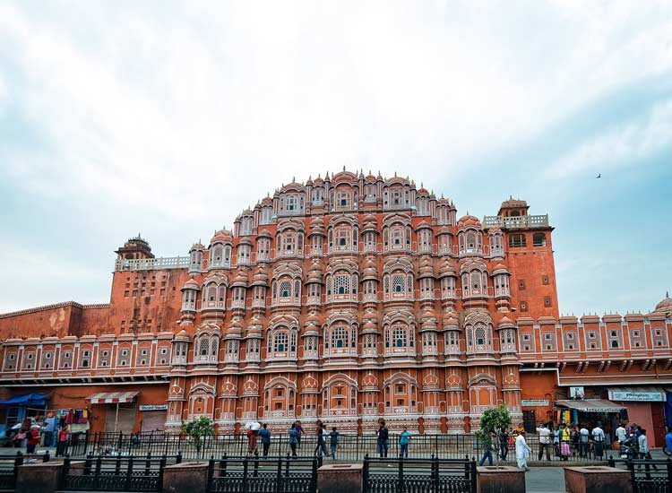
The royal class has always had its own way of doing things, and so did the royal ladies of Jaipur. Jaipur is also one of the most popular historic places in India. Belonging to royalty required them to observe the “purdah” system constantly. However, they were also curious about the happenings of the outside world. To satisfy this curiosity, Maharaja Sawai Pratap Singh had the Hawa Mahal built for them.
Upon visiting it the first time, you will notice that the Hawa Mahal also looks like a crown. This is because the Maharaja who built it was a major devotee of Lord Krishna. Also known as the “Palace of Winds”, it was designed by Lal Chand Ustad. It resembles a honeycomb of a beehive with its 953 intricate windows. Upon visiting it the first time, you will notice that the Hawa Mahal is shaped like a crown.
3. Agra Fort, Uttar Pradesh
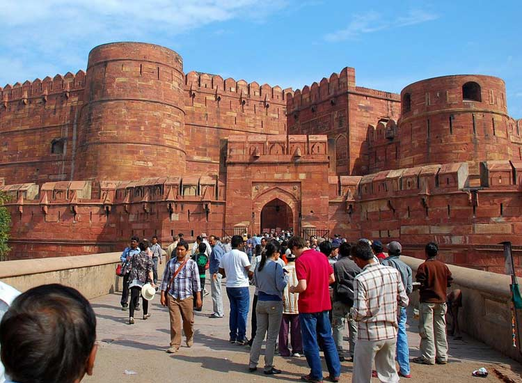
Looking at Agra Fort, one would get the impression that for the Mughals, opulence and grandeur were seemingly alien terms. Located in Agra, a city included in the Golden Triangle Tour Circuit India, it beautifully brings the elements of aesthetics to size. The massive fort was built by Akbar in 1565 AD, and stands out for its fabulous design and incredible construction.
The fort also consists of two ornately designed gates, the Amar Singh Gate and the Delhi Gate. Visitors can only enter through the Amar Singh Gate. The Agra Fort, which is always included among the must visit forts and palaces in India, consists of a number of buildings like Moti Masjid, Diwn-i-Aam, Diwan-i-Khas and Musamman Burj, where Shah Jahan died in imprisonment.
4. Fatehpur Sikri, Agra
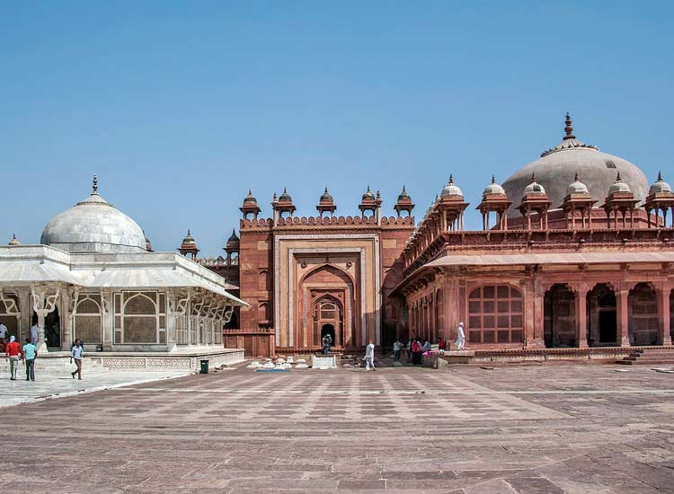
The Mughals can be credited with having built some of the finest monuments in India, and Fatehpur Sikri, a UNESCO World Heritage Site, is yet another example of that. Although, it should be said that it is more a small city than just a monument. Built during the reign of Akbar, this royal city is home to several buildings like Birbal’s Palace, Tomb of Salim Chisti and Jama Masjid.
This royal city, which, for a brief period of time, served as the capital city of Akbar, today wears a look of melancholy while its rich sandstone walls reflect the glory of a past age. You will also come across the place where Tansen, the legendary singer, practiced his singing. Watch out for the Buland Darwaza at the entrance, which measures almost 54 meters.
5. Qutub Minar, Delhi
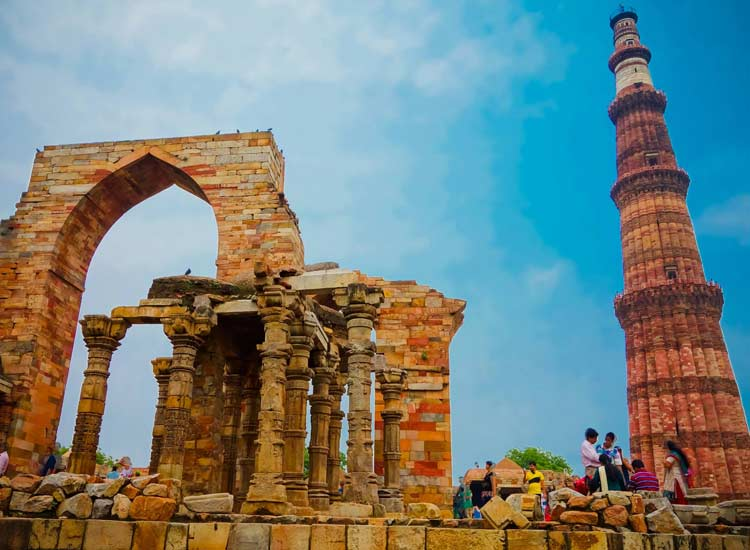
The Qutub Minar, another UNESCO World Heritage Site, is an incredible example of Indo-Muslim architecture that touches the skies at an incredible height of 240ft. It is named after Qutub-ud-din Aibak, the first Muslim ruler of North India. The place where Qutub Minar stands is usually regarded as the site of the first Muslim kingdom in northern India.
Verses from the Quran are finely carved onto its red sandstone stories, with most of them being mostly in Arabic. Another interesting fact is that the first mosque in India, Quwwat-ul-Islam Masjid, is located at the foot of the Qutub Minar.
6. Red Fort, Delhi
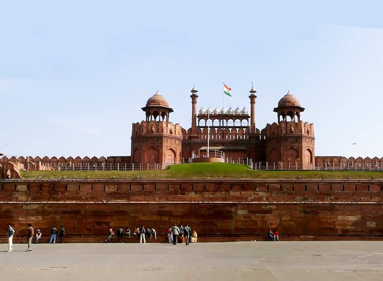
Red Fort, a UNESCO World Heritage Site, is a symbol of the Mughal Empire at its peak. The enormous size, aesthetic proportions and style, all represent an age of unrestrained opulence. Amidst the unceasing bustle of Old Delhi, stands this colossal monument, evoking nothing but admiration from the onlookers.
Red Fort, which is one of the popular forts and palaces in India, was also built by the Mughal emperor, Shah Jahan. It took over 10 years to complete, and was constructed when the emperor decided to shift his capital from Agra to Delhi. Back then, the fort was known as Qila-e-Mubarak. It is from the ramparts of Red Fort that the Prime Minister delivers his speech on Independence Day.
7. Amer Fort, Rajasthan
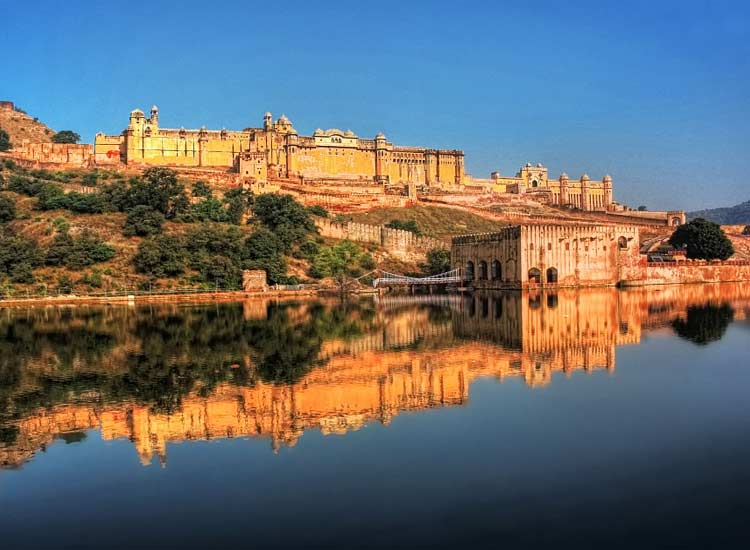
Amer Fort occupies an honorable place in the most popular historic places in India, and undoubtedly, is one of those places which you cannot miss during a tour to Rajasthan. It’s built with both red and white sandstone, and stands as an example of ancient Indian architecture. The fort is home to numerous buildings like the Diwan-i-Khas, Diwan-i-Aam and Sheesh Mahal. The carvings on the ceiling and the walls are simply marvelous.
There are several paintings which depict hunting and portrait of illustrious Rajput rulers. There are a series of gates in the fort, and each one possesses a unique architectural and structural element. A unique experience at the Amer Fort is the elephant ride which takes you all the way to the Suraj Pol (sun gate).
8. Charminar, Hyderabad
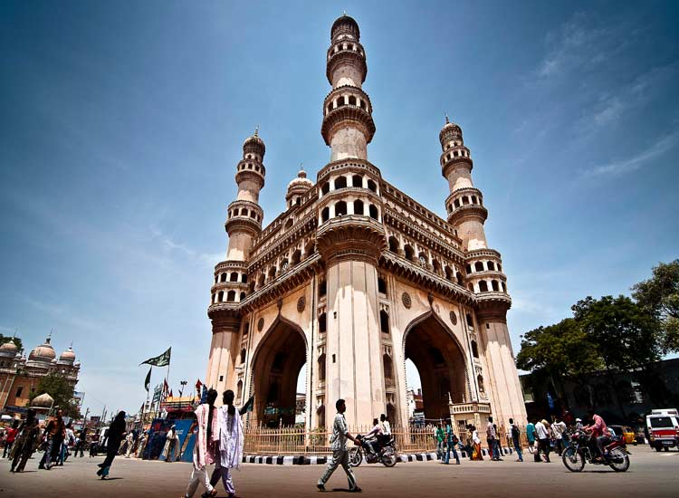
There are many theories attributed to the building of the Charminar. According to one of them, Muhammad Quli Qutub Shah had this monument built in 1591 to express his reverence to Allah. According to another theory, Charminar was built to celebrate the end of plague in the city. Legend also has it that there is a secret tunnel running from this incredible monument to Golconda Fort.
Whatever the reason, one cannot deny that this architecture is elegant, stylish and exquisite. It’s called Charminar because of its four pillars, each of which measure almost 20 meters from the side. They also open to balconies that circle them. These minarets never fail to captivate onlookers and passers-by. Any visit to Hyderabad is incomplete without visiting the Charminar.
9. Mysore Palace, Mysore

You cannot fathom the greatness of the Mysore Palace unless you come face to face with it. The grandness of its proportions would have you believe that the palace had sprung out of a fairytale. It was built by the British architect Lord Henry Irwin in 1912.
Mysore Palace was built in Indo-Saracenic style and features intricate interiors. The interiors of the palace are adorned with ornate ceilings, jeweled corridors, stained glass windows and open mandaps. You also come across several Wadiyar memorabilia, including the jeweled throne. Mysore Palace also hosts the festivities of Dasara festival. Explore Mysore tour packages.
Mysore Palace during the Dasara festival is a spectacular sight. During this occasion, the entire palace is illuminated with over 1,00,000 lights.
10. Ajanta and Ellora Caves, Maharashtra
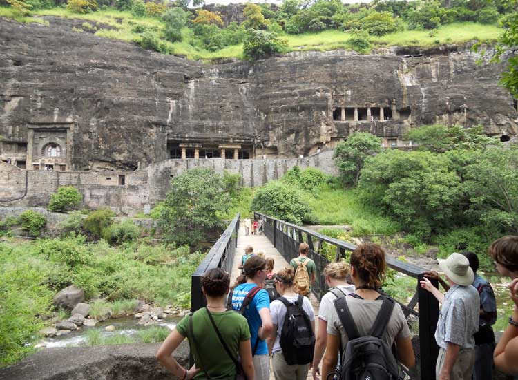
Another of the most famous historical places in India are the Ajanta and Ellora Caves in Maharashtra. Both of them are UNESCO World Heritage Sites and draw tourists in impressive numbers. The sculptures and artifacts in the caves belong to three different religions: Buddhism, Jainism and Hinduism. There are 12 Buddhist, 17 Hindu and 5 Jain caves.
It was in these caves, which were in fact Buddhist monasteries that the monks prayed, studied and meditated. The credit for discovering these famous caves goes to the British officer John Smith who stumbled upon these historic sites while he was out on a tiger hunt in 1819. The artifacts in the caves depict the past lives and rebirths of Gautam Buddha.
11. The Great Chola Temples, Tamil Nadu
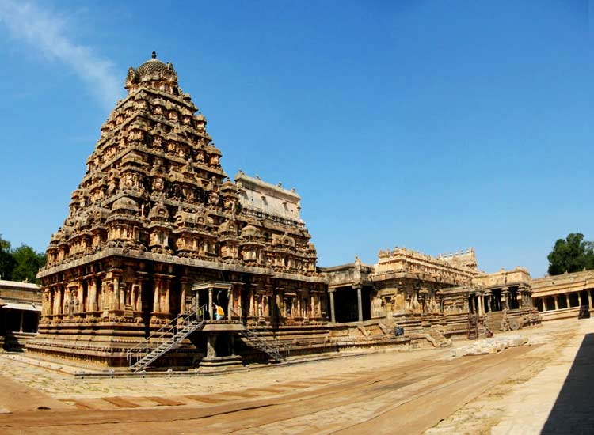
The Great Living Chola Temples in Tamil Nadu are a group of UNESCO World Heritage Sites and the epitome of artistic and architectural excellence. These temples were built by the kings of the Chola Empire, a powerful empire which stretched all over South India and the neighboring islands. The three great temples are: Brihadeshwara Temple at Tanjore, Airavateshwara Temple in Darasuram, and Brihadeshwara Temple in Gangaikonda Cholapuram.
Every one of these temple reflect the outstanding achievements of the Chola Empire in sculpture, architecture, painting and bronze casting. One of the examples of that is the 24meters vimana and a stone image of Shiva at Darasuram. The incredible gopurams of these temples along with the sculptures inside them really win one’s heart.
12. Hampi, Karnataka

The ruins of Hampi, a UNESCO World Heritage Site, situated in Karnataka, is without a doubt, one of the 15 historical places in India that you can’t miss. Hampi is a place which seems to be stuck in time, waiting for daily life to resume, on its streets, on its temples and in its halls. In every corner here, you come across something worthy of being admired. Every stone tells a story of the past. Hampi was built by the great ruler Deva Raya II of the Vijaynagara Empire.
For art and history lovers, this is a paradise, as it is for those wanting to explore the achievements and glories of the past ages. One of the great attractions in Hampi are the sculptures of Lord Shiva carved in stone. Besides this, there are other attractions including the chariot structures, elephant stables and gopurams. Visitors are immensely fascinated by the beauty of the Virupaksha Temple. Hampi is also the place where mint, Vijaynagara’s main coin, was minted.
13. Gateway of India, Mumbai
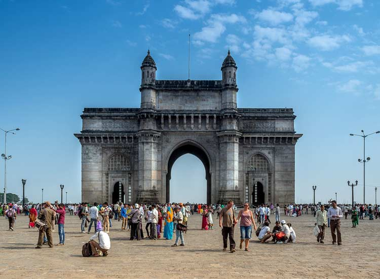
One of the most popular historic places in India is the Gateway of India. One of the most iconic landmarks in the country, it was built by the British in 1924. It was actually built as an entry and exit point during the British period, and inaugurated by the Viceroy, the Earl of Reading. Today, however, it has become a favorite picnic spot for locals and tourists alike.
On any given day, one can spot dozens of street vendors serving tasty snacks along with balloon sellers, thereby lending a happening vibe to the entire place. The Gateway of India has been reinforced repeatedly over the years with yellow basalt and concrete. In addition, the turrets are decorated with delicate lattice work.
14. Konark Temple, Odisha
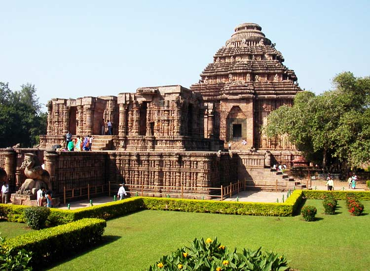
And there stands the Konark Temple in Odisha, a UNESCO World Heritage Site, in all its resplendent glory and fame. What artistic passions must have led to the creation of this marvel, one wonders. It was built by King Narasimhadeva I, the great ruler of the Ganga dynasty, along with 1200 artisans in stone. The temple, which is devoted to the Sun God “Surya”, leaves everyone enchanted with the fabulous Kalinga architecture.
]The crowd pullers are undoubtedly the gigantic chariot, pillars and walls which lend the temple an authentic touch of Odisha. European sailors famously referred to this structure as the “Black Pagoda”. Another remarkable feature of the temple is to be found at its gate, where there is a depiction of two lions crushing elephants along with a human body lying at the foot of the elephant.
15. Khajuraho Temples, Madhya Pradesh
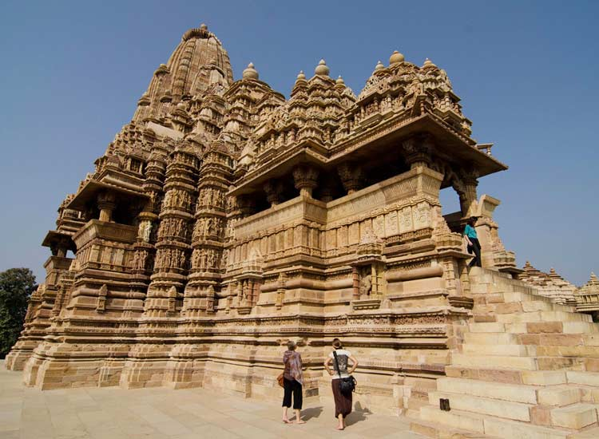
If you want to see the most artistic expression of human sensuality, then Khajuraho Group of Monuments in Madhya Pradesh is where you should head to. Located in the small and quiet town of Khajuraho, the Khajuraho Temples are included in the list of UNESCO World Heritage Sites. These beautiful temples are adorned with brilliantly carved statues and sculptures which reflect the various aspects of Kama Sutra.
However, there are other attractions to check out inside these temples besides the sensual sculptures. These marvelous temples which were built by the Chandelas are a group of Hindu and Jain temples. They also reflect the acceptance of religious diversity during that period of history.
Khajuraho, which is one of the most beautiful places to visit in Madhya Pradesh, is so-called because it is adorned with date palms, since “Khajura” means date palms in Hindi. This is also the reason why this place was called “Khajjurpura” in ancient times.